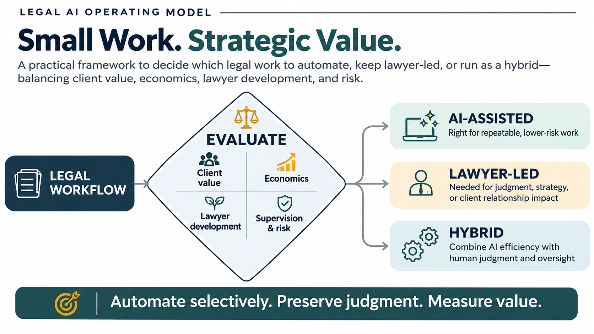

Small Work. Strategic Value.
A decision framework for allocating legal work across AI, junior associates and seasoned lawyers: balancing efficiency, client relationships, professional development, and expert judgment when required.
Problem discovery → work allocation → value validation → low-friction adoption
A Practice Leader's question is not “Can AI do this task?”
It is: How do we allocate legal work efficiently while preserving opportunities for professional judgment, associate development, and broader client value that an AI agent or less-experienced lawyer might not recognize? Work should not be automated simply because AI can perform some or all of the underlying tasks.
Outcome
What does the client need, how quickly, and with what level of confidence or counsel?
Development
Does this task build legal judgment, issue recognition, drafting, or client-context skills?
Connection
Could the request reveal a consequential need that merits a human conversation?
Value
Does the future service model outperform the baseline after review, operating, and change costs?
Risk
Can quality, confidentiality, professional responsibility, and escalation be controlled?
1. Start with the problem, not the solution
The Problem → Solution framework prevents “we want to use AI” from becoming the problem statement.
Establish what is actually happening
Problem: What client or business outcome is not being delivered well?
Users: Client, partner, associate, paralegal, practice/operations staff—who experiences the friction?
Alternatives: How is the work handled today? What already works? Where are delays, rework, handoffs, or missed connections?
Business: Why is this worth changing—client experience, economics, capability, risk, or relationship continuity?
Validation: What time, volume, quality, financial, and user evidence confirms the problem?
Choose the least disruptive effective response
Options: AI, rules automation, process redesign, human work, or a hybrid.
Solution fit: Does the option address the root cause rather than move the work elsewhere?
Risks: What must remain human-owned? What are the failure and escalation conditions?
Metrics: What improves against baseline—and what must not deteriorate?
Feasibility: Data, integration, security, validation, support, adoption, and economics.
2. Apply the four lenses as one decision method
Validate the user problem, current alternatives, business reason, and evidence before selecting a solution.
Possibility, Opportunity, Workflow, Engineering, Reflect. Move from a plausible idea to a testable, feasible opportunity—and revisit assumptions.
Users, Business, Growth, Feasibility, Context, Evaluations, User Experience, and Model Intelligence. Check the whole system, not just model capability.
Prioritize → roadmap → PRD → product backlog → sprint backlog → prototype/development → evaluate and reflect.
These are complementary lenses, not four independent approval processes. Their purpose is to prevent a weak opportunity from advancing simply because a prototype is easy to build.
3. Route work deliberately: not automatically
Illustrative routing logic for a common, low-complexity contract request from an early-stage company. This example is hypothetical and does not represent any law firm's actual workflow, technology capabilities, staffing decisions, or client offering.
| Work component | Potential destination | Why this route may fit | Guardrail / trigger |
|---|---|---|---|
| Intake and basic information capture | AI / self-service | Structured questions and approved information can reduce friction and give clients faster access. | Client choice, approved data handling, clear scope, accessible human help. |
| Standardized first-pass comparison or summary | AI + associate review | AI can organize and surface candidate issues; an associate validates, learns to recognize patterns, and records rationale. | Traceable source references, defined test set, human verification, exception routing. |
| Bounded analysis with high developmental value | Junior associate-led | Preserves deliberate reps in issue spotting, reasoning, drafting, and explaining advice. | Supervising lawyer, feedback rubric, graduated responsibility; AI may be used after an initial independent attempt. |
| Novel, high-consequence, strategic, or ambiguous issue | Partner / senior lawyer | Requires judgment, business context, negotiation strategy, or a trusted client conversation. | Escalate on defined risk/complexity triggers; partner involvement serves client need, not an automated sales prompt. |
| Low-volume, weak-data, unverified, or already-effective process | Keep / redesign first | AI may add cost, friction, or risk without enough incremental benefit. | Document why not to automate; revisit only when evidence or conditions change. |
4. Test a routing decision interactively
Change the task characteristics below. This is a conversation aid for structured judgment—not a validated scoring algorithm or an automated legal staffing decision.
Hybrid: AI preparation + associate validation
The task appears standardized enough for bounded AI support, while associate review can preserve learning and catch context-specific issues.
Why this route?
The selection balances repeatability, moderate learning value, moderate legal context, and verifiability.
Before proceeding
Confirm source data, define the review rubric, test against a representative sample, and agree escalation triggers with the supervising lawyer.
Supervision Is Part of the Workflow
AI-assisted work is not ready for adoption merely because it produces a plausible output or reduces preparation time. The workflow must also be reliably supervised at a cost and effort proportionate to its value.
Accountability
Who owns the final legal work product and approves consequential decisions?
Verification
What source evidence, test cases, and review procedures can identify substantive errors?
Escalation
Which exceptions require associate, senior lawyer, or partner involvement?
Supervision economics
Do review, correction, and escalation costs outweigh the expected operational benefit?
Professional development
Does the proposed allocation preserve meaningful opportunities to develop legal judgment?
5. Prove the economics against the existing scenario
Compare the full current workflow with the proposed allocation—not gross AI time savings with total current labor. Count review, correction, escalation, platform, training, and change costs.
Baseline: current delivery
Measure volume, turnaround, partner/associate/staff touch time, rework, quality, write-offs or agreed price, client experience, and the learning opportunities the current work creates.
Future: routed delivery
Measure AI processing plus human review, exception handling, new handoffs, operating costs, adoption, quality, client access, relationship continuity, and associate learning.
A balanced outcome scorecard
| Value dimension | Measures to compare with baseline |
|---|---|
| Client outcome | Time to useful response, quality, correction rate, accessibility, satisfaction, and confidence in escalation to a lawyer. |
| Economics | Cost to serve, contribution margin, write-offs, realized avoided spend, redeployed capacity, and ongoing operating cost. |
| Relationship | Human connection when needed, repeat instructions, next consequential matter, cross-practice engagement where client need supports it. Track as outcomes, not guaranteed upsell. |
| Associate development | Substantive reps, task mix, feedback quality, progression on a legal skills rubric, and time to independent competence. |
| Quality and risk | Material issue misses, false positives, unsupported outputs, escalation precision, confidentiality incidents, and review compliance. |
6. Make adoption low-friction by design
Low-friction implementation means avoiding duplicate data entry, parallel status trackers, unnecessary new logins, opaque handoffs, and forced changes to proven practices. Integrate with existing tools and approval points where feasible. Train by role and workflow, not with generic AI demonstrations.
7. The product-development gate: build only after the case holds
What This Model Does and Does Not Claim
Small Work. Strategic Value. is a firm-neutral, illustrative decision model for evaluating legal work allocation, AI opportunities, supervision requirements, and investment value.
All task characteristics, routing recommendations, metrics, and governance gates are hypothetical. They require validation with legal practitioners, practice leaders, finance, technology, risk, and other relevant stakeholders.
This work sample does not assess any law firm's internal operations, evaluate the performance of existing legal AI products, or claim that a firm needs additional technology. No confidential client information, actual implementation results, or realized ROI is presented.
Industry Perspectives & Further Reading
The following public resources explore questions about legal AI, client value, lawyer development, and professional supervision. They provide independent industry context and do not imply endorsement of this model by the individuals or organizations referenced.
Cooley | Legal AI and Client Value
Public discussion of AI's potential impact on legal service delivery, economics, and client relationships.
Cooley | Leadership Interview
Additional public perspective on the changing relationship between AI, legal work, and professional judgment.
Wilson Sonsini | Breakthrough Minds
Annie Datesh's conversation with Raj Mahapatra explores legal innovation, practitioner needs, technology adoption, and the evolving role of human judgment.
Raj Mahapatra | Supervision Is the Hard Problem
A perspective on why supervising AI-generated work requires different methods from supervising junior lawyers, including verification and workflow design.